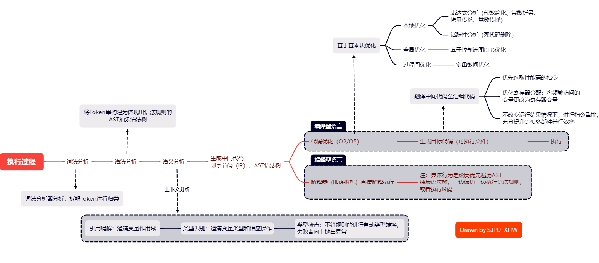

Java 学习笔记（二）
Reference: Oracle Documentation
Chapter 3. Java Record & Java Bean
3.1 Java Record
在 Java 14 以后，官方引入了新的 Java 关键字：record；
那么这个 record 关键字究竟有什么用处呢？它和我们熟知的 class / interface / abstract class 又有什么区别呢？其实在 Java 14 以前，有一种需求写起来非常的麻烦，正因为这种需求才产生出了 record 关键字。这个需求是什么呢？
举个例子，假如现在有个应用场景，想要定义一个数据类型，它只是用来存放一些数据（例如数据库查询的结果，或者是某个服务的返回信息）。
在很多实际情况下，我们希望使用这些数据就像 Java 内置基本类型一样，是不可变数据类型。这样做有几点好处：
复制构造时，不是引用传递，因此是深拷贝。这样使用起来和基本类型一样方便，但是又不用担心改错源数据（非引用链接）；
确保数据在多线程情况下无需同步，线程安全！
回忆下基础篇中的知识，要让 Java 类型（对象）behaves like 不可变数据类型，就必须确保：
- 类型中的每个数据域都是 私有的、常量的（
private，final）； - 每个数据域都只能通过
getter方法获取，不能有任何setter方法； - 必须存在公有构造函数，并且构造函数内初始化各个数据域（常量只能这么做）；
- Object 基类继承函数
equals返回true当且仅当类中的每个数据域都相等； - Object 基类继承函数
hashCode在类中的每个数据域都相等时，一定返回一样的值； - Object 基类继承函数
toString最好包含 类名 和 每个数据域的名称和值；
好了，假设我们现在想要保存一个 “联系人” 的信息，只包含一个名称、住址。我要定义这个类为不可变数据类型，那么：
1 | import java.util.Objects; |
……这很难评，仅仅为了将两个基本类型保存为不可变的数据类型，如此大费周章。具体来说，有几点坏处：
许多代码都是和业务逻辑无关的 “模板代码”；
这种写法模糊了这个类原本的作用（语义模糊）：仅仅是按不可变数据类型保存两个基本类型而已！
很差的扩展性。
现在还只有两个属性，那如果我要再加一个属性呢？
那么我要修改构造函数、修改所有的重载方法、为新的属性添加访问器。可谓麻烦。
于是，在 Java 14 中，定义了新的关键字 record，它的含义就是告诉编译器，这是个保存数据的类型，要把它定义成不可变的样子！
经过上面的铺垫，你就能理解 record 关键字的意义，以及它的作用了。
3.1.1 记录类型的构造函数
Java 规定，在使用 record 关键字定义类型时，默认构造函数存在参数，且与私有数据域一一对应。
允许特殊的定义方式：
1 | public record Person(String name, String address) {} |
你没有看错，上面一行等价于之前用 class 定义的一大堆代码……
除了简化了默认构造函数，你仍然在此基础上自定义构造函数：
1 | import java.util.Objects; |
3.1.2 记录类型的访问器
和一般的访问器命名法有些差别，记录类型默认的访问器不使用 getXXX 命名，而是使用 数据成员的名字 直接命名。
另外，一般真的不用改记录类型的访问器，如果需要改，那么说明这个类一定不是单纯的数据记录类，请用普通类型定义！
3.1.3 记录类型的 Object 重写方法
根据定义，equals、hashCode 一般都不需要你再次重写。
在某些情况下，你可能想要自定义 toString，这没有问题，就和普通的类重写的方法一样。
3.1.4 记录类型的静态变量和方法
虽然不允许有公有可写的属性，但记录类型允许定义 静态变量、静态方法，它们都可以是公有的。
你可以把它们理解成对整个数据类型的配置，或者解释。
3.2 Java Bean
嗯，实际上，还有一种约定和 Java Record 应用很像的 Java 类型定义规范，它的名字是 Java Bean（Java 豆？）。
没错，Java Bean 是 Java 的一种类型定义规范，和 record 类似，它们的共性是用一个类来盛放一组数据。
但是，record 追求的是不可变数据类型（数据域不可变性）、一条记录的不可变性和易操作性，而 bean 追求的是：
数据的取出放入的接口不变，保证兼容性；
数据序列化（serializable）和传输方便（注：Java Bean 出现的原因就在于此，为了让一组相关数据传输方便）；
不过 Record 也很简单，传输起来也方便，但是不可变，应该看业务需求选择。
所以，Java Bean 没有像 record 一样，它规定了一组类型定义方式：
- 提供一个默认的无参构造函数；
- 需要被序列化并且实现了 Serializable 接口；
- 可能有一系列可读写属性，并且一般是 private 的；
- 有一系列的 getter 或 setter 方法；
感性理解一下：想象一下存在这样一个箱子，其内部被分割成几个格子，每个格子用来存放特定的物品，工人取出或者放入物品后封箱，然后叫了个快递把箱子发出去了。这个箱子就是 Java Bean，取出、放入就是 getter、setter，物品就是属性，封箱发出就是序列化和传输。
举个例子：
1 | import java.io.Serializable; |
上面的 Person 类就是合格的 Java Bean（注：Serializable 接口已经在 Java 笔记1 中详细介绍）。
3.3 Java Record 与 Java Bean 的对比
| Java Record | Java Bean |
|---|---|
| 追求不可变数据类型、数据结果表示 | 追求数据传输便捷性、数据访问接口规范性 |
| Java 14+ 使用关键字 record 辅助定义 | 纯手工实现约定 |
| final class，不可被继承，也没有被继承需求 | 普通 class，可以被继承 |
| 常用于存放、比较 和 展示数据结果 | 常用于完成如数据传输一类的业务逻辑 |
Chapter 4. 反射
Java 中的反射机制是什么？

复习一下 Java 的运行过程。我们知道，Java 虚拟机是一种解释器，是解释 Java 字节码（*.class）的一种程序。其大致运行过程如下：
运行类加载器（ClassLoader）将字节码加载到内存中 —-> 运行字节码验证器强制检查 Java 程序合法性和安全性，不符合安全规范的不予运行 —-> 读取内存中的字节码逐句解释为机器码执行；
可以说，在 Java 源文件编译为字节码之后，就形成了一个个 *.class 文件。这里的每个 *.class 文件都对应着这个类型的必要信息。在 Java 虚拟机中将这些字节码加载到内存中，构建了这个类对应的特殊的表示对象（称为 Class 对象）。这样在引用到这个类的位置就能正确地给出行为。
注意，在 Java 中，
Class（首字母大写，和关键字class是两回事）本身就是一个类型，是承载类的信息的类（元类，meta-class），它的实例对象就叫Class对象。
而所谓的反射，可以说是上面的过程的运行时逆过程：
Java 的反射就是从加载到内存中的 Class 对象，反向获取其中的信息（或者说，反向映射）。
4.1 反射的意义使用场景
不过在介绍反射之前，首先谈谈它的坏处：
- 破坏了类的封装性（因为反射是从
Class对象反向获取信息，因此突破了类型可见性修饰符的约束，可以访问某个类的私有成员）； 运行时确定类型，性能肯定不好，丢掉了静态类型语言的性能优势；
运行安全问题。
如此重要的缺点，已经注定了 Java 的反射机制不应该被随便使用，并且大部分场合下并不适合使用反射。
但是因为反射的重要功能，少数场合又不得不用。举几个例子：
- Java codelinter 静态类型代码检查。比如 IDEA 的 LSP Server 在探查某个对象的方法和属性的时候（你在 IDEA 里写个对象，后面加个点就能弹出一堆方法和属性提示），除了分析上下文定义的方法以外，一种重要的手段就是通过反射分析；
- 大型框架（例如 Springboot）很多都是配置化的（例如通过 XML 文件配置 Bean），为了保证框架的通用性，可能需要根据配置文件加载不同的类或者对象、调用不同的方法。这个时候就必须使用到反射了，它可以完成 “运行时动态加载需要的加载的对象” 的任务；
- Java 加载某些数据库驱动的时候，需要运行时动态构建类型信息，使用时就要用反射机制；
- 某些注解的行为需要反射（下一章 “注解” 所需要了解的知识）。
4.2 反射 API
了解它的地位后，在开始使用它。使用 Java 的反射就是使用 java.lang.Class 和 java.lang.reflect.* 的所有 API。
首先列出可能用到的类型：
| Java 类型 | 类型说明 |
|---|---|
Class |
用来在内存中描述一个 Java 类（所有继承于 Object 的类） |
Constructor |
用来在内存中描述一个 Java 类的构造函数信息，包括访问权限和动态调用信息等 |
Field |
用来在内存中描述一个 Java 类或者 Java 接口的数据成员（或者说属性）信息，包括访问权限和动态修改等 |
Method |
用来在内存中描述一个 Java 类或者 Java 接口的成员函数（或者说方法）信息，包括包括访问权限和动态调用信息等 |
Modifier |
用来在内存中描述一个 Java 类或者 Java 接口的所有成员（包括属性、方法）的修饰属性，例如 public/private/static/final/synchronized/abstract 等信息 |
4.2.1 Class 类型与 Class 实例
我们知道了，反射需要根据内存中的 Class 对象进行操作，那么怎么得到一个普通类型所对应的 Class 对象呢？Java 提供了 3 种方法：
1 | /* <Object> 表示任意类型，只要是 Object 的子类 */ |
下面以获取 String 类对应的 Class 对象为例。
通过该类（一定继承于基类
Object）的实例 中的getter方法：<Object>.getClass()；这个方法返回是这个对象所在的类型 的对应
Class实例对象。1
2
3
4String name = new String();
/* 获取的 stringClass 实例对象就是 String 类型在 JVM 内存中对应的 Class 对象 */
Class stringClass = name.getClass();通过该类的静态属性获得这个类所对应的
Class实例对象。1
Class stringClass = String.class;
利用
Class类型提供的静态方法，通过类名字符串查找当前内存中的 Class 对象；这种方法最常用，因为使用反射的时候，几乎都是不知道对象、不知道类型定义、只知道类型名的情况。
1
Class stringClass = Class.forName("String");
知道类如何获取某个类型的 Class 对象，那么可以对这个 Class 对象进行哪些操作呢？
判断任意对象是否是这个
Class对象描述的类的实例，或者其他什么东西：1
2
3
4
5
6
7/* obj 是否是这个 Class 对象描述的类型的实例 */
public native boolean isInstance(Object obj); /* [Method] */
/* 这个 Class 对象描述的类型是否是 Interface 类型 */
public native boolean isInterface();
public native boolean isArray();
public native boolean isPrimitive(); /* 判断基本类型 */
public native boolean isAnnotation(); /* 判断注解 */
下面以这个 Class 类型存放的是普通 Java 类为例，叙述常见的方法。
如果
Class对象中描述的是注解，那么在下一章 “注解” 进行介绍。如果
Class对象中描述的是接口，那么只能获取一些成员信息，可能能调用一些静态方法或属性。
从
Class对象创建实例（哪怕源码中没有这个类的定义也行，只要内存中有这个Class对象）：1
2/* 按默认构造函数创建实例 */
public native Object newInstance(); /* [Method] */获取
Class对象对应类的构造函数：1
2
3
4
5
6
7
8
9/* 获取 Class 对象描述的类型的：所有"公有的"构造方法 */
public Constructor[] getConstructors();
/* 获取所有的构造方法(包括私有、受保护、默认、公有) */
public Constructor[] getDeclaredConstructors();
/* 获取指定的构造函数 */
/* 这里的参数列表是各个参数类型对应的 Class 对象！ */
public Constructor getConstructor(Class... parameterTypes);
public Constructor getDeclaredConstructor(Class... parameterTypes);获取
Class对象对应类的数据成员（属性，静态修饰不作单独区分）：1
2
3
4
5
6
7
8/* 获取 Class 对象描述的类型的：所有"公有的"属性 */
public Field[] getFields();
/* 获取所有的属性(包括私有、受保护、默认、公有) */
public Field[] getDeclaredFields();
/* 获取指定名称的属性 */
public Field getField(String fieldName);
public Field getDeclaredField(String fieldName);获取
Class对象对应类的成员函数（方法，静态修饰不作单独区分）：1
2
3
4
5
6
7
8
9/* 获取 Class 对象描述的类型的：所有"公有的"方法 */
public Method[] getMethods();
/* 获取所有的属性(包括私有、受保护、默认、公有) */
public Method[] getDeclaredMethods();
/* 获取指定名称的属性 */
/* 和构造函数不一样，这里需要先给定方法名 */
public Method getMethod(String methodName, Class... parameterTypes);
public Method getDeclaredMethod(String methodName, Class... parameterTypes);获取
Class对象对应类的修饰符：1
2/* 获取类型自身的修饰符 */
public int getModifiers();
4.2.2 Constructor 类型
在介绍 Class 类型时，我们了解了如何得到 Constructor（该类的构造函数信息）对象，那么应该如何操作它？
最常用的方法是 调用这个构造函数：
1 | /* T 为泛型 */ |
警告：这里的参数类型必须要和取得 Constructor 对象时传入的形参类型一致。否则运行时错误。
还可以获取 Constructor 的其他信息，具体请看官方文档。
4.2.3 Field 类型
在介绍 Class 类型时，我们了解了如何得到 Field（该类的属性）对象，那么应该如何操作它？
常用的方法是，按查找到的属性信息设置对象属性、读取对象属性：
1 | public void set(Object target, Object value); |
这里为什么要给 target 参数呢？因为我们得到的 Field 对象只是保存了原来类型属性的一部分信息，不能指明这个属性是属于具体哪个对象的。所以取值和设置时需要给定对象。
警告：这里的 value 必须和取得 Field 对象时原本类型一致，否则运行时错误。
对于私有成员，想要访问它前需要强制越过可见性修饰符：
1 | public void setAccessible(boolean available); |
可能产生的异常有 FieldNotFoundException，IllegalAccessException 等等；
还可以获取 Field 的其他信息，具体请看官方文档。
4.2.4 Method 类型
在介绍 Class 类型时，我们也了解了如何得到 Method（该类的方法）对象，那么应该如何操作它？
常用的方法是，调用它：
1 | public void ObjectObject invoke(Object target, Object... parameters); |
如果是私有方法，也需要通过 setAccessible 调整访问可见性。
还可以获取 Method 的其他信息，具体请看官方文档。
4.2.5 Modifier 类型
其实，除了 Class 类型，其他的 Constructor/Field/Method 类型都可以调用 getModifiers() 获取当前字段的修饰符。返回值是 int，但是可以通过 Modifier 静态方法转为可读的字符串：
1 | public String toString(); |
可以表示的修饰符不仅有可见性修饰符，还有各种像 native / synchronized / transient / volatile / abstract / final / interface 等等，都可以检查到，使用对应的 isXXX() 实例方法即可。
4.2.6 反射的使用实例
- 反射越过泛型检查；
- 大型框架（以 SpringMVC 为例）字段名一类的数据类型配置反射处理相当简洁清晰；
- 自定义注解（写
RUNTIME注解逻辑，下一章详细叙述）；
Chapter 5. 注解
Java 中一种语法称为注解，可能在大部分其他的语言中都有。在 Python / TypeScript 中，这种类似的做法称为 “装饰器”。
严格来说，Java 的注解和 Python / TypeScript 的装饰器的机制不一样。因为前者只是改变了执行方式，而后者相当于是一种语法糖，处理后替换了被装饰的对象。但是它们的语法和最终作用真的很像。
这种做法的特征是，在不改变原代码内容和逻辑的基础上，进行一些修饰和包装（就像给解释器注解这段代码的执行方式一样），使得解释执行（或者编译）这段代码时的方式有些许改变。
你没看错，“注解“ 这个东西本身，不会对原先的代码的逻辑有任何影响（这段代码编译出的字节码不会变），只是做个标记，告诉即将要读取这个注解的对象（可能是编译器、加载器，或者是程序中的其他代码），用约定好的方式来执行这段代码（比如执行之前、执行之后插入了一些其他流程）。
5.1 注解的使用和分类
你也许会在一些代码中见到这样的书写方式：
1 |
|
@Resource("Hello") 是有参数的注解，@PostConstruct / @Override 是无参数的注解；
@Resource("Hello") 在这个例子中是修饰类的注解，@PostConstruct / @Override 在这个例子中是修饰方法的注解，@Param 在这个例子中是修饰形参的注解。
注解的使用语法就这些，无非是无参数的 @<AnnotationName>，或者有参数的 @<AnnotationName>(...)，加在它们所指定的对象头部位置。
要掌握好注解的使用方法，就先把它们按使用特征分类。一般来说，注解是按处理阶段进行分类：
写给编译器看的注解（称为 编译时注解，Compile-time Annotation）。
这类注解不会被编译进入
.class字节码文件，它们在编译后就被编译器扔掉了；举例：@Override：让编译器检查该方法是否正确地实现了覆写（C++override关键字有同样的功能）；@SuppressWarnings：告诉编译器忽略此处代码产生的警告。
写给
classLoader或者其他加载时 ~ 运行时的工具看的注解（称为 加载时注解，Load-time Annotation）。这类注解会被编译进入
.class文件，但加载结束后并不会存在于内存中。这类注解只被一些底层库使用，一般我们不必自己处理。比如有些工具会在加载 class 的时候，对 class 做动态修改，实现一些特殊的功能。
写给运行时某一部分代码看的注解（称为 运行时注解，Run-time Annotation）。
就算是运行时注解，JVM 也并不会通过注解主动进行一些操作。只有部分代码通过 反射 读取指定的注解，进行业务逻辑的执行。
这也是最常用的注解形式，在许多框架中都会出现。
5.2 自定义注解
有些情况下（比如使用框架），你可能会用很多预先定义的注解，但是你很好奇这些注解是怎么运作的，于是你就要了解，一个注解是如何定义、如何生效（进行处理）的。
搞清楚一个东西的最好方法就是从头开始做一遍，于是你准备动手搓一个自定义的注解出来。
5.2.1 注解的定义 和 实质
Java 规定，注解使用 @interface 关键字定义注解。最基本的语法如下：
1 | public MyFirstAnnotation { |
注解的定义和 Java 的记录类型一样简洁，只需要声明要传给注解的参数即可（这些参数直接以访问器的形式定义，如上），不需要定义任何处理逻辑！
因为注解的处理交由某些特定的代码完成（下一节介绍），注解的定义本身 就仅仅是一个 “注解”，或者说等待处理的标识而已。
此外，还需要搞清楚一件事：注解的实质就是一个 Java 类型。所有的注解都继承于接口 java.lang.annotation.Annotation；因此，上面的定义方法只不过也是一种语法糖罢了。
但是，只有这个定义还不够描述这个注解，比如，这个注解是前面分类中的什么类型？应该在什么阶段、被谁处理（生命周期）？允许修饰谁？
这些信息 可以交给描述注解的注解，也就是元注解（meta-annotation），来完成。
Java 标准库中定义了一大批实用的元注解，所以一般不需要我们自己定义元注解，只要知道怎么使用元注解来定义注解就可以了。常用的元注解如下：
@Target(<ElementType/ElementTypes[]>)元注解：解释当前注解所能修饰的对象类型。参数取值：
ElementType.TYPE（允许修饰类、接口），ElementType.FIELD（允许修饰属性），ElementType.METHOD（允许修饰方法），ElementType.CONSTRUCTOR（允许修饰构造函数），ElementType.PARAMETER（允许修饰方法的形式参数）；@Retention([RetentionPolicy])元注解：解释当前注解的声明周期（指定注解类型）。可选参数取值：
RetentionPolicy.SOURCE编译时注解、RetentionPolicy.CLASS加载时注解（默认）、RetentionPolicy.RUNTIME运行时注解；@Repeatable(<Annotation Class Instance>)元注解：解释当前注解是否可以重复注解同一对象。要用的话，直接在注解的定义头部加上
@Repeatable(<AnnotationName>.class)；这里需要反射方法传入自定义注解类对应的
Class对象。@Inherited元注解：解释当前注解是否可继承。当且仅当@Target参数为ElementType.TYPE时有效。这个元注解的意思是，当前注解能不能随着继承交给子类。
使用示例：
1 | /* 这个注解只能修饰方法 */ |
1 | /* 可以注解方法和构造函数的 运行时注解 */ |
5.2.2 运行时注解的处理
由于其他两类注解一般用不到（编译时注解由编译器使用，因此我们一般只使用，不编写；加载时注解主要由底层工具库使用，涉及到class的加载，一般我们很少用到），因此此处仅叙述运行时注解的处理。
从现在开始，下文中的所有 “注解” 都指代 “运行时注解”。
我们知道，注解本身只是个注解，如果你不做任何处理，那么它将对原本的代码毫无影响，就像注释一样。
我们还知道，注解只是一个 Java 类而已，但是这个类只存放一些参数，不与外界代码有任何关联。
所以处理注解的方法一目了然：使用上一章介绍的反射机制，不仅能找到所有规定类型的注解，还能让注解发挥指定的效果。
上一章中，我们只介绍了关于类型、接口的反射 API，这里我们补充一下针对注解的反射 API：
判断
Class对象本身是否描述的是注解：public boolean isAnnotation();；判断注解是否存在于指定对象上：
isAnnotationPresent(<Class Object of Annotation>)；这个方法在
Class / Field / Method / Constructor类型中都有。从指定对象上获取注解对象：
getAnnotation(<Class Object of Annotation>)；这个方法在
Class / Field / Method / Constructor类型中都有。注意：可能会返回
null，所以使用前请用isAnnotationPresent检查！从方法 / 构造函数中获得参数注解对象：
getParameterAnnotations() -> Annotation[][]；只有在
Method / Constructor中存在。
再回想一下，注解是个类型，里面装的全是传入参数，并且直接提供各个传入参数的访问器方法。
有了以上的知识，就能写一个自定义的注解了。
5.2.3 实战：自定义一个运行时注解
考虑一个需求，我想定义一个修饰属性的运行时注解，如果这个参数是整数，就限制这个参数的范围为注解参数给定的范围；如果这个参数是字符串，那么限制的是字符串长度。其中最大、最小值可选。代码如下：
1 | /* File: Range.java */ |
思考一下，RangeChecker 应该什么时候被使用？没错，这取决于你的业务逻辑。注解是 “惰性的”，只有你显式调用注解处理方法，注解的处理才会开始。
 wechat
wechat alipay
alipay